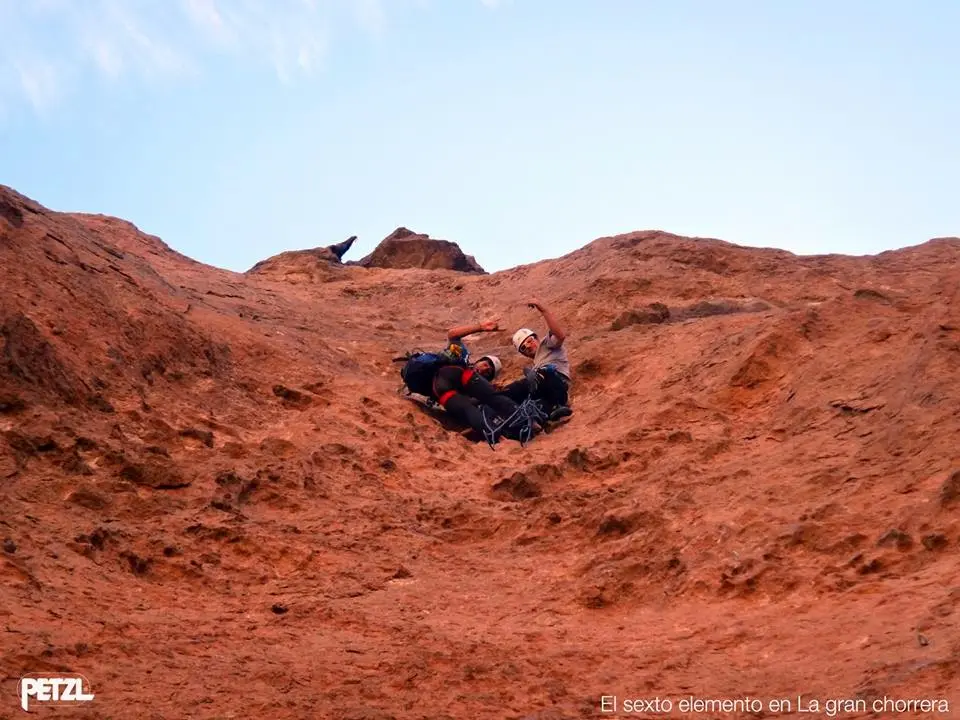
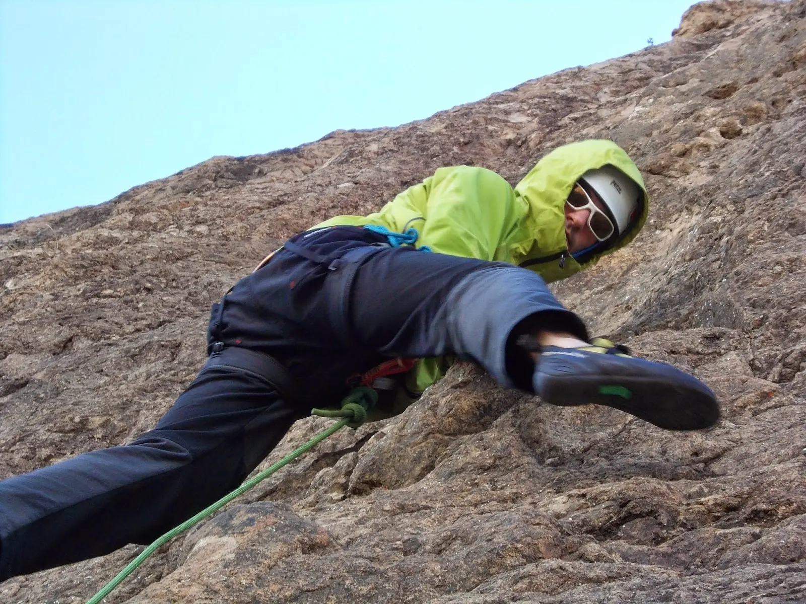
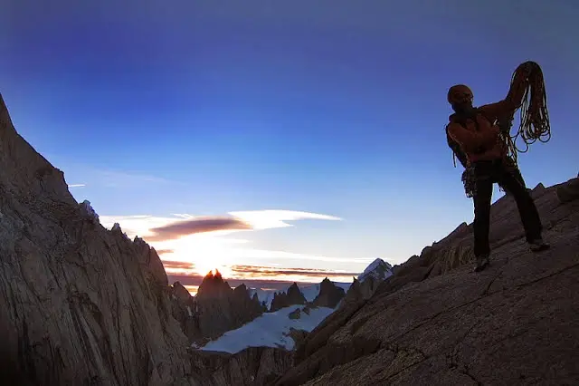

// FUERA DEL TRABAJO
Piedra parada | Petzl rock trip
En 2012 , para el décimo aniversario del Petzl RocTrip, se armo un gran evento en Piedra Parada. Un nuevo año volvimos a revivir este paisaje salvaje y árido, el singular monolito de 260 metros y el gran Cañón de La Buitrera.
4 de febrero de 2015 · 2 minutos de lectura

Pasamos unos increíbles días junto a Petzl Argentina, grandes amigos y escaladores de todas partes del país y del mundo. Escalamos con los chicos de San Luis, Córdoba, Chile, Bolivia, Francia, Brasil y muchos mas.
En lo personal disfrutamos muchísimo del lugar, especialmente de su aislamiento y la inigualable compañía de amigos. Queremos agradecer a Petzl Argentina por brindarnos su apoyo y fomentar el deporte. No solo nos dieron los equipamientos necesarios para esta aventura, sino que también dieron todo su apoyo para regalarnos a todos los Argentinos este hermoso lugar.
Subí algunas fotos del viaje y la gente con la que lo compartimos:
Viajes relacionados

I'll always be a climber
No sabes porque, empieza con un "Si voy a ir", porque es una tarde soleada y termina con vos renunciando a tu trabajo.
Agosto 2014
El chalten | Escalada
Es un lugar que marca un antes y un después. Increíble en toda su exención, pero su clima produce ese amor odio difícil de comprender.
Marzo 2014
Bariloche | Trekking
Salimos de la Ciudad de Bariloche, desde la base del Cerro Catedral, uniendo el Refugio Frey con la Laguna Jakob (Refugio San Martín).
Enero 2013I'll always be a climber
// EL SIGUIENTE PASO
TU PRODUCTO.
SU PRÓXIMA ETAPA.
Una primera conversación para entender el desafío y ver si puedo aportar valor.
↗ Hablemos de tu proyecto